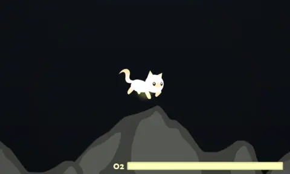
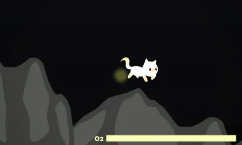
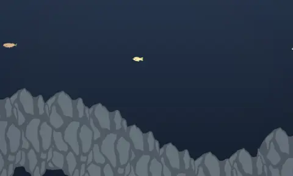

Package detail
Endless Ocean (Preview)
Version 0.1.0
What it does
Endless Ocean adds a long stretch of seeded seafloor east of NewWorld. Take the final vanilla boat past the old eastern limit to fish three depth bands populated by familiar species. Returning to an unloaded stretch regenerates its terrain and fish.
Requirements
- JAMM-CGF configured with the untouched August 2023 legacy VM
data.win(bytecode 16). - A separate game copy for the built output; the current Steam YYC archive is not a compatible build base.
- The recipe must run after the target mod pack has been merged so it can inspect room width and eastern artwork bounds.
- Use the final vanilla boat, Boat7, to reach generated territory.
Install
- Download this source ZIP.
- In JAMM, choose Add mods and import the ZIP.
- Enable it in a profile, run Check, then build or install to a separate game copy.
- For a pack, build the pack first and apply Endless Ocean as the last recipe step.
In-game controls
- Take the final vanilla boat east. To choose a layout, set
seedin the recipe before building, or edit[World] seedin the generated INI while the game is closed.
Screenshots








How it works
At build time the recipe reads the merged NewWorld room and placed sprite/mask bounds. It starts generated territory at the maximum of x=170,000, the room width and the eastern extent of placed content. It extends the room by 488 chunks × 2,048 pixels (999,424 pixels); on the vanilla base the room ends at x=1,169,424. Only the final vanilla boat, Boat7, receives a longer MAX_X, stopping 400 pixels before that edge. The camera follows through the enlarged native room; Boat7, its buoy, lure and existing navigation keep their usual coordinate frame. The normal and deep sonar remain the vanilla bounded overlays following Girl and Lure; Endless Ocean does not add a floating-origin transform or rewrite sonar noise, which still uses absolute x and depth.
jamm_chunk_unit(seed,index,channel) creates deterministic layout values without consuming GameMaker's gameplay random stream. jmk_endless_ocean_floor samples smooth value noise at two frequencies, so adjacent chunk edges agree. A chunk places four collidable CaveRockBig instances and tests three candidate fish slots across upper (Celad/Inno), middle (Mustardfish/Elder Mustardfish) and near-floor (Dijon/Garm) depth bands. Before placing each fish, the loader checks its padded spawn envelope against live Collidable masks. The native species keep their usual swimming, bait, lunge, catch, sell and Fishalog behavior.
The room controller reads the camera center and requests the current chunk plus two neighbors on either side through jamm_chunk_stream(chunks, first, last, create_script, release_script). Its callback receives the chunk index and an ownership list; the helper releases chunks outside the range and invokes the release callback for each tracked instance. A full window owns up to 20 rocks and 15 free fish. Hooked fish, fish in the net and fish aboard stay with vanilla gameplay until their interaction finishes; generated free instances are destroyed when their chunk leaves the window. Revisiting reconstructs the original layout from the seed.
The recipe default seed is 271828. On first visit it writes only [World] seed to jamm_endless_ocean.ini in the game save directory, shared by all slots. Patches to both primary and backup SaveManager [Fishes] writes omit transient streamed fish IDs. Native position, catches, quests and Fishalog records continue to use the game's slot format. This preview is finite: fixed chunks stop at the east edge, wave tiles are allocated at room startup, and unloading respawns the original chunk population rather than preserving local depletion. The fixed room width also remains visible to other legacy systems such as room-width-based routes and wave calculations; this recipe does not implement floating-origin travel or a streamed navigation graph.
- Seed + chunk index
- Five-chunk window
- Build floor + fish
- Release distant chunks
Technical facts
| Package type | Recipe |
|---|---|
| Manifest file | jamm-recipe.json |
| Version | 0.1.0 |
| Generator | endless-ocean |
| APIs used | JAMM chunk layout and streaming scripts, GameMaker instance and collision APIs, legacy Boat7, Fish and save events, and Catalog API lookup when installed. |
| Assets and scripts added | 1 NewWorld controller object, 0 sprites and 7 standalone scripts. The recipe adds 5 controller events and patches 2 SaveManager events. |
| Save-file behaviour | The seed is the only generated-world state saved. jamm_endless_ocean.ini stores it under [World] as seed, shared by all slots in that save directory. Transient fish instance IDs are excluded from [Fishes]. Normal catches, quests and Fishalog progress still use the game's save system. |
| Compatibility and merge behaviour | Targets the August 2023 legacy VM archive or a compatible merged archive. For a pack, build the profile first and use that verified archive as the recipe base. The repository reports an in-game run with Antiquity, PWB, Abyss, Colour and Verdant. An existing Endless Ocean controller or colliding chunk script names prevent a second installation. |
Version history
- 0.1.0: Preview of seeded, finite eastward chunk streaming with vanilla fish and persistent per-directory seed.
Measured performance
Measured performance data will appear here when content/benchmarks.json is added. No performance figures are assumed.
FAQ
How far east does the preview go?
It generates 488 chunks of 2,048 pixels (999,424 pixels) from a start at or east of x=170,000, adjusted beyond the input room and placed artwork. On the vanilla base, the far edge is x=1,169,424.
Do caught fish come back when a chunk reloads?
Unloaded chunks regenerate their initial fish layout from the seed, including fish previously caught there. Ordinary catches and Fishalog progress continue to use the native save system.
Files in the package
README.mdjamm-recipe.json